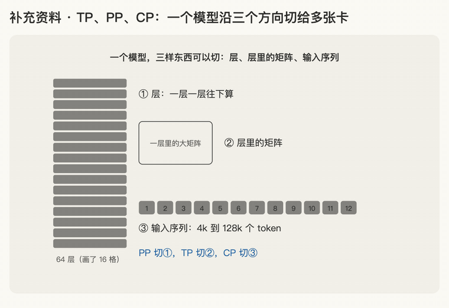

附录 · 补充资料：TP、PP、CP，一个模型沿三个方向切给多张卡
本篇回答：模型太大、一张卡放不下时，TP、PP、CP 分别把什么切开？各要付出什么代价？实际训练怎么把它们组合起来？
讲解日期：2026-11-15（对话里应提问讲解）· 属于 AII 第 6 章的内容，提前写成补充资料，讲到第 6 章时再并入正文。
对应原文：materials/ai-infra-book/manuscripts/06-超节点.md§6.1.4 L78–L127（六种并行一览表、图 6-3）；§6.2.2 L143–L254（TP，图 6-5）；§6.2.4 L267–L294（CP，图 6-11、6-12）；§6.2.5 L295–L323（PP，图 6-13、6-14）
本篇缩写：TP = Tensor Parallelism（张量 / 并行）· PP = Pipeline Parallelism（流水线 / 并行）· CP = Context Parallelism（上下文 / 并行）· DP = Data Parallelism（数据 / 并行）· FFN = Feed-Forward Network（前馈 / 网络）· q / k / v = query / key / value（查询 / 键 / 值）· NVLink = NVIDIA Link（NVIDIA 的卡间直连）· AII = 本专题主书《深入理解 AI Infra》；全部缩写见缩写与术语表
讲解
第一步：一个模型有三样东西可以切（2026-11-15）
先回想模型在处理什么。 以 AII 反复用的 Qwen3-32B 为例：
| 东西 | 是什么 | 谁来切它 |
|---|---|---|
| ① 层 | 64 层，一层一层往下算 | PP |
| ② 层里的矩阵 | 每层里几个大矩阵乘法，加上 attention | TP |
| ③ 输入序列 | 一段文字，可能 4k 个 token，也可能 128k 个 | CP |
原文 §6.1.4 的并行方式一览表（L88–L95）用"切分的维度"来分：PP 切层 \(L\)，TP 切特征 \(H\)（权重的列或行、注意力头），CP 切注意力的序列位置 \(S\)。
| 切什么 | 每张卡负责 | 卡之间要交换什么 | |
|---|---|---|---|
| PP | 层 | 一段连续的层 | 前一段算完的中间结果，交给下一段 |
| TP | 一层里的矩阵 | 同一个矩阵的一部分 | 每层都要把各卡的部分结果加起来 |
| CP | 输入序列 | 序列的一段位置 | attention 要用的、别的卡上那段的 k、v |
一句话：PP 切层，TP 切层里的矩阵，CP 切输入序列。
第二步：PP，按层切，像工厂流水线（2026-11-15）
类比：工厂流水线。 64 道工序一个工人做不完。工人甲做前 32 道，做完把半成品递给工人乙，乙做后 32 道。
原文图 6-13（L301）：Qwen3-32B 的 64 层分成两段，卡 0 存第 1–32 层，卡 1 存第 33–64 层。每张卡只存自己那些层的权重，段与段之间只传中间结果（激活）。
- 好处：权重直接分走一半；卡之间只在交接处传一次，传得少，可以跨机器。
- 代价：bubble（气泡）。卡 1 要等卡 0 算完第一份才有活干，结尾卡 0 又闲着。
公式（原文式 6-7，L313–L316）：
- \(\eta\) 读作 eta，这里表示利用率：卡在干活的时间占总时间的比例。
- \(q\)：流水线分成几段（几个阶段）。
- \(b\)：一批数据切成几个 micro-batch（小批次）。切得越多，流水线越能一直有活。
- 分母 \(q+b-1\)：第一个 micro-batch 要走完全部 \(q\) 段，之后每多一个只多一格时间。
算一遍（原文 L318 的例子）：
| 段数 \(q\) | micro-batch 数 \(b\) | 利用率 |
|---|---|---|
| 4 | 4 | \(4 \div 7 \approx 57\%\) |
| 4 | 16 | \(16 \div 19 \approx 84\%\) |
一句话：PP 按层分段，传得少能跨机器；代价是开头结尾空等，micro-batch 越多，空等占比越小。
第三步：TP，切一层里的矩阵，每层都要合并（2026-11-15）
类比：一道工序本身太大，几个工人同时做这一道。 一张大表格，几个人各算几列，最后要当场把结果合起来，才能进下一道工序。
原文图 6-5（L149）的两处切法：
- attention 按头分（多头注意力，Transformer 第 13 章），每张卡算几个头；
- FFN 的大矩阵按中间维度切开，每张卡算一部分。
两处最后都只得到部分和，必须把各卡的部分和加起来才是这一层的结果。这个"各卡结果相加、每张卡都拿到总和"的操作叫 AllReduce。
数字（原文 L176）：Qwen3-32B 每层要做 2 次 AllReduce，64 层共 128 次，而且每次都要等合并完才能算下一步。
为什么非切不可（原文 L151 的例子）：Qwen3-32B 的 BF16 权重约 65.52 GB，加上一个 128K 会话的 KV 约 34.36 GB 和 2 GiB 工作区，单卡共约 102.03 GB，超过 H100 的 80 GB；切到两张卡，每卡约 52.09 GB，就放得下了。
- 好处：同一层的权重和计算都分摊，单个请求也能算得更快。
- 代价：通信次数多，而且在计算的关键路径上，躲不开。所以 TP 必须放在同一台机器内、用 NVLink 直连的卡上，一般不超过 8 张。
一句话：TP 把一层的矩阵切给几张卡，每层都要把部分和加起来，所以只能放在离得最近的卡上。
第四步：CP，切输入序列，k、v 要跨卡传（2026-11-15）
类比：一本书太厚，按章节分给几个人读。 但每句话都要联系前文，后面的人要不时向前面的人要前文的要点。
原文图 6-11（L273）：长序列的位置分给多张卡，每张卡只存自己那段位置的 q、k、v。
为什么要跨卡传：因果 mask（Transformer 第 17 章）规定每个词要看自己和前面所有的词。卡 1 上的词，要用卡 0 那段的 k、v，所以 k、v 必须传过去。常见做法是让 k、v 在各卡之间轮流传一圈，叫 Ring Attention（环形注意力）。
工作量不均（原文 L283）：8 个 token 的因果注意力，一共要算 \(1+2+\cdots+8=36\) 对"谁看谁"。
| 分法 | 卡 0 | 卡 1 |
|---|---|---|
| 连续切半 | 位置 1–4：\(1+2+3+4=10\) 对 | 位置 5–8：\(5+6+7+8=26\) 对（差 2.6 倍） |
| 前后搭配 | 位置 1、2、7、8：\(1+2+7+8=18\) 对 | 位置 3–6：\(3+4+5+6=18\) 对 |
第 \(i\) 个位置要看 \(i\) 个词（自己和前面 \(i-1\) 个），所以它贡献 \(i\) 对。实际实现用分块交错的"之"字形布局，但原始位置和因果 mask 都要保留。
- 好处：长序列的激活和 KV 分摊开，序列很长时才值得用（约 32k token 以上）。
- 代价：要在卡之间传 k、v，还要处理工作量不均。
一句话：CP 把长序列按位置切开，因果 mask 让后面的卡要用前面卡的 k、v，还要前后搭配着分才均匀。
第五步：三者怎么组合（2026-11-15）
从里到外（分布式训练工程报告 §3.2）：
- TP 在最里面：同一台机器的 8 张卡，靠 NVLink 每层合并；
- CP 在序列很长时加上；
- PP 跨机器：机器 A 前几十层，机器 B 后几十层；
- DP 在最外面：整套复制几份，各自处理不同的数据。
例子（工程报告 §3.4，框架选型图里"70B · 64 卡"）：TP=8 × PP=3 × DP=2，即 8 张卡一起切每层的矩阵，3 台机器分层，整套复制 2 份。
一句话：切得越细，卡之间要说的话越多，所以说话最频繁的 TP 放最近，说话最少的 DP 放最远。
动画演示：一个模型沿三个方向切给多张卡

可交互版：animations/appendix-tp-pp-cp.html（滑块：流水线里有几个 micro-batch，看利用率 \(b \div (4+b-1)\) 怎么变）
怎么看： 1. 第一帧：层、层里的矩阵、输入序列三样东西（第一步）； 2. 蓝红两段层、四段流水线格子图（第二步）：空白格就是 bubble； 3. 矩阵切两半、部分和相加（第三步）； 4. 8×8 的因果三角形，蓝色归卡 0、红色归卡 1，粗框是要跨卡传 k、v 的格子（第四步）； 5. 三台机器 × 8 卡 × 两份副本（第五步）。
练习与作答记录
题 1（第二到第四步）：一个模型层数很多、每层不算大，序列只有 4k 个 token，只是总权重一台机器放不下。你会先用 TP、PP、CP 里的哪一种？为什么？
作答：（待作答）
口诀
层多切层走流水，传得最少能跨机；
层大切阵靠直连，每层合并不能离；
序列太长切上下文，k、v 跨卡前后齐。
本篇复习卡片
练习做完后，按答错、卡住的地方补上。
附录 · 延伸阅读
留给以后深入学习用。★ 是建议先读的。
推荐阅读
| 读什么 | 读哪里 | 读它为了什么 |
|---|---|---|
| ★ AII 第 6 章 | §6.1.4 L78–L127（六种并行一览、套娃比喻） | 一张表看清每种并行切哪个维度、交换什么 |
| AII 第 6 章 | §6.2.2 L143–L254 | TP 为什么一种切法只需拼接、另一种必须求和（L176 起的最小矩阵乘例子） |
| AII 第 6 章 | §6.2.4 L267–L294 | CP 的 decode 情形：各卡统计量怎么合并成全局 softmax（L287 起的公式） |
| AII 第 6 章 | §6.2.5 L295–L323 | PP 各段耗时不均时为什么会积压 |
| ★ 分布式训练工程报告 | distributed-pretraining/notes/03-engineering-report.md §2.2–§2.4、§2.6、§3.2 |
训练视角：通信量、放置规则、一张表看完 |
| Ultra-Scale Playbook | distributed-pretraining/materials/text/ultrascale-playbook.md L1032（TP）、L1412（CP，L1514 Zig-Zag Ring Attention）、L1565（PP） |
带 benchmark 的原始推导 |
| 框架选型图 | distributed-pretraining/interactive/framework-choice.html |
填模型大小和卡数，看推荐的 TP × PP × DP |
数学原理
- 流水线利用率：\(q\) 段、\(b\) 个 micro-batch，总时间 \((q+b-1)t\)，干活时间 \(q\cdot b\cdot t\)，比值化简为 \(b/(q+b-1)\)。\(b\) 远大于 \(q\) 时趋近 1。
- 部分和：矩阵乘 \(y = xW\) 按 \(W\) 的行切开时，每张卡只算出 \(y\) 的一部分加数，必须相加；按列切开时，每张卡算出 \(y\) 的不同列，只需拼接。
- 等差数列求和：\(1+2+\cdots+n = n(n+1)/2\)，8 个 token 共 36 对。
公式清单
| 公式 | 意思 |
|---|---|
| \(\eta_{\mathrm{PP}}=b/(q+b-1)\) | 流水线利用率：\(q\) 段、\(b\) 个 micro-batch |
| \(T_{\mathrm{PP}}=(q+b-1)t\) | 流水线处理完全部 micro-batch 的时间，\(t\) 是每段耗时 |
| \(1+2+\cdots+n=n(n+1)/2\) | 因果注意力里 \(n\) 个 token 要算的"谁看谁"对数 |